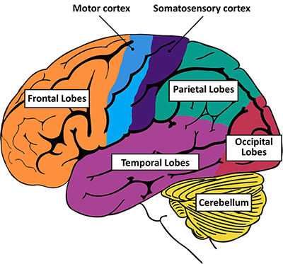
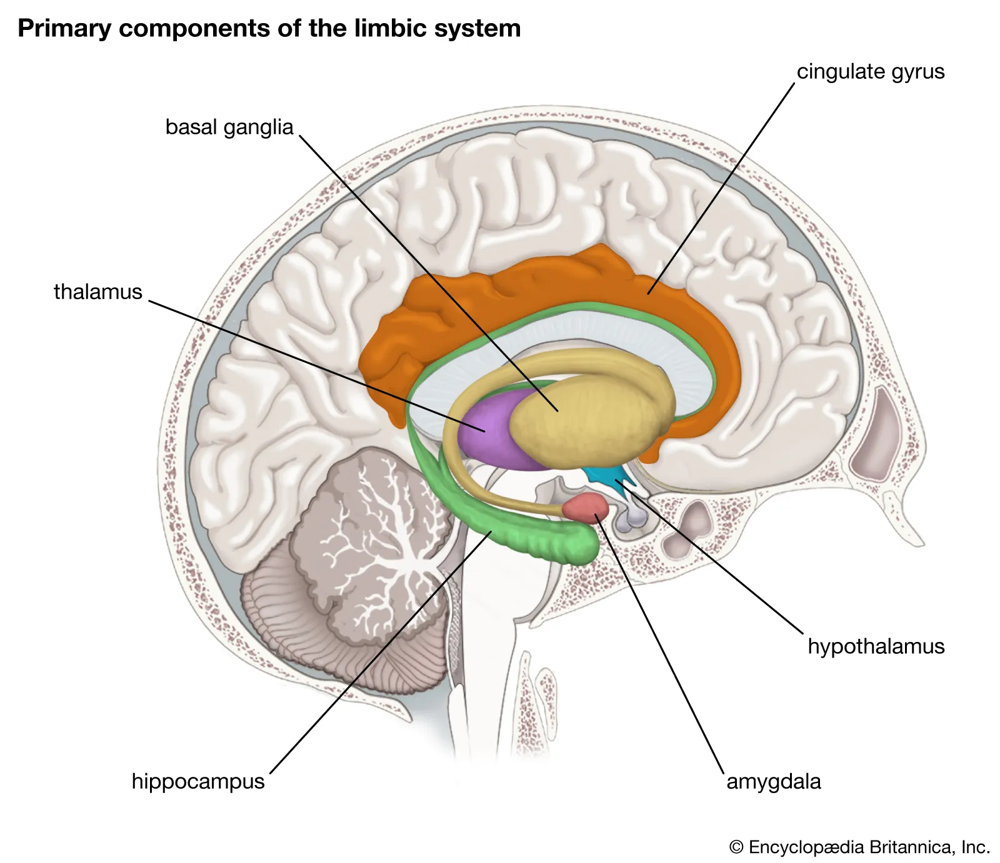

We found that across the whole brain, cell type was the primary source of segregation, as visualized in constellation plots(Fig. 1c). However, in certain cases, such as the ganglionic eminence, cells of distinct types from a common region are drawn together in UMAP space, suggesting that regional identity can also be a strong source of variation (Fig. 1c).
→ suggesting that
Cerebrum
주로 Conscious
Cerebrum: the topmost part of the brain and is the source of conscious thoughts and actions(memory등등)
two halves (hemispheres)로 나누어지는데, 이 두 hemishpheres가 Corpus Callosum이라는 기저의 두꺼운 신경섬유를 통해 소통한다
좌/우 다른 기능을 가진다
left→ have the ability to form words
right →controls many abstract reasoning skills(형태, 공간, 인식, 비언어적 사고)
1-1. Cerebral Cortex
Mammalian에서 특히 고도로 특화된 구조다
Cerebral Cortex: Most of the actual information processing in the brain takes place in
gray matter(GM)
전체 신경 세포의 1/4이 Cerebral cortex에 존재한다
160억개의 Neurons, 610억여개의 non-neuronal cells

frontal lobes(전두엽) plan a schedule, imagine the future, or use reasoned arguments
Prefrontal cortex: complex, social decisions
Motor cortex: controlling, voluntary movement
Parietal lobes(두정엽): reading and arithmetic, sensoring
Somatosensory cortex: processing sensory information
Occipital lobes(후두엽) : process imagesfrom the eyes and link that information with images stored in memory
Primary Visual cortex: receiving visual info.
Temporal lobes(측두엽) : retrieving memories, integrating memories and sensations of taste, sound, sight, and touch
2. Inner brain
the gatekeepers between the spinal cord(척수) and the cerebral hemispheres
Determining emotional states, modifying perceptions and responses, automatic movements
Pituitary gland: controls the release of various hormones that regulate growth, metabolism, and reproduction
Pineal gland: regulate sleep-wake cycles and circadian rhythms
Basal ganglia : initiating and integrating movements
clusters of nerve cells
Striatum
Basal ganglia의 일부, 운동과 보상 관련 정보 처리
Amygdala : Processes emotions, particularly those related to fear and pleasure, and plays a crucial role in emotional memory and behavioral responses
Hippocampus(해마): memory formation, processing spatial information
단기 기억을 장기 기억으로 통합(저장은 Cerebrum)
→ 통합될 때 시냅스 연결 구조가 변한다
** Fornix: Hypothalamus와 Thalamus에서 Hippocampus로 이어지는 아치 모양의 신경세포다발(arching tract of nerve cells)가 장기 기억 저장과 retreiving에 관여한다
Brain stem
Pons
Medulla
Limbic System

Amygdala, Hippocampus, Thalamus, Prefrontal cortex 로 이루어짐
Formation of Emotions, memory 등등,,
Cerebellum
hindbrain
Unconscious
Fetal
1-1. Telencephalon
Pallium
뇌의 상부를 덮는 구조로 cerebral cortex의 일부
Telencephalon 상부
region에 따라
Dorsal Pallium: Cerebral cortex로 발달
Medial Pallium: Hippocampus로 발달
Lateral Pallium: 후각구? 및 관련 구조로 발달
Ventral Pallium: Amygdala(편도체)의 일부로 발달
Subpallium
forebrain의 일부, Pallium 하부
Embryonic Development 과정에서 Basal Ganglia와 Limbic system의 일부를 형성한다
Ventral telecephalon에서 발생한다
GEs를 통해 Inh. Interneuron을 만들어 Cortex로 이동시킨다 → Exc. vs Inh 조절/균형에 중요한 역할 → 이게 잘못되면 schizophrenia, ASD 연관될 수 있음
structures
Medial Ganglionic Eminence(MGE)
: GABAergic Inh. Neuron과 Oligodendrocytes가 만들어지는 곳
Lateral Ganglionic Eminence(LGE)
: Basal ganglia를 구성한다
Caudal Ganglionic Eminence(CGE)
: Inh. Neuron을 만들고 Cerebral cortex와 Hippocampus에 기여한다?
Preoptic area(POA)
Ventral telencephalon
Telenchphalon(대뇌) 아랫쪽
→ 발달 중 특정 신경 구조와 세포 유형이 여기서 형성된다
Basal ganglia와 limbic system 일부를 포함(Ventral Telecephalon에서 Amygdala가 발달)
Early embroynic development에서 Ventral Telecephalon의 stem cell들이 분화하여 Basal ganglia와 Limbic system을 형성한다(특히 GABAergic inhibitory neurons, and then migrate to the cerebral cortex)